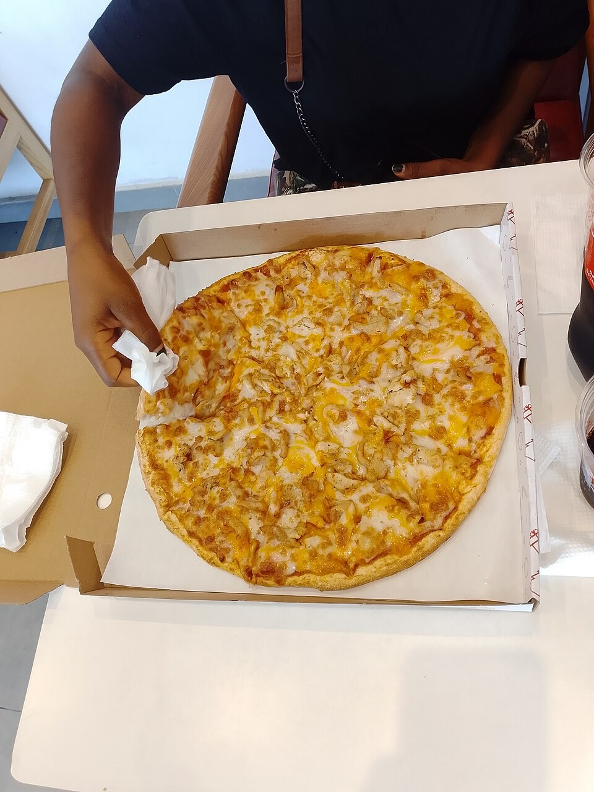
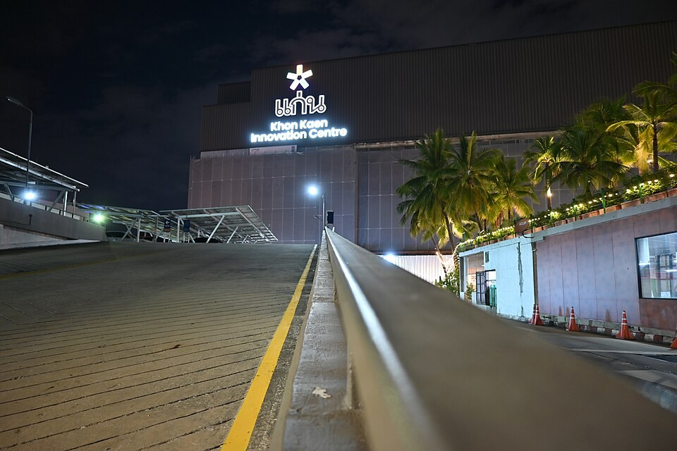
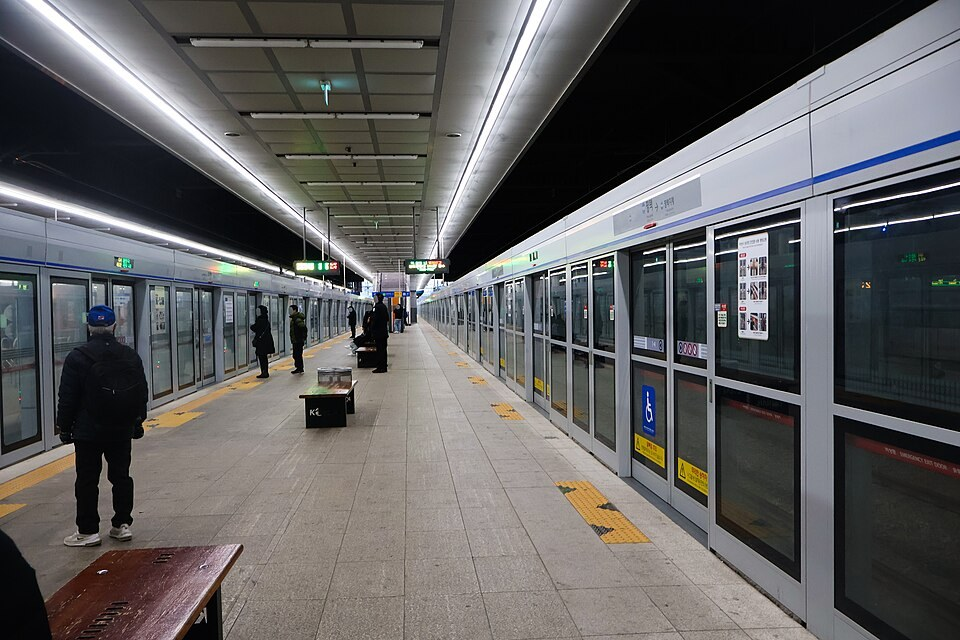
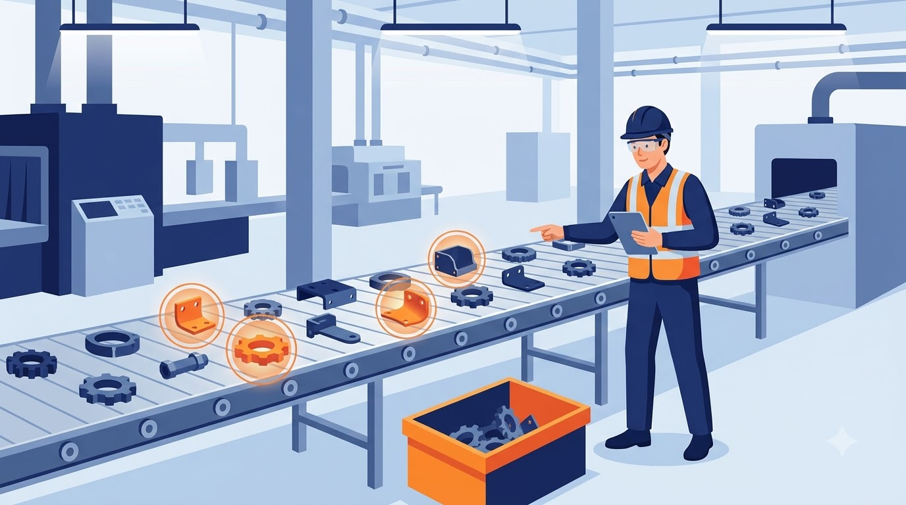
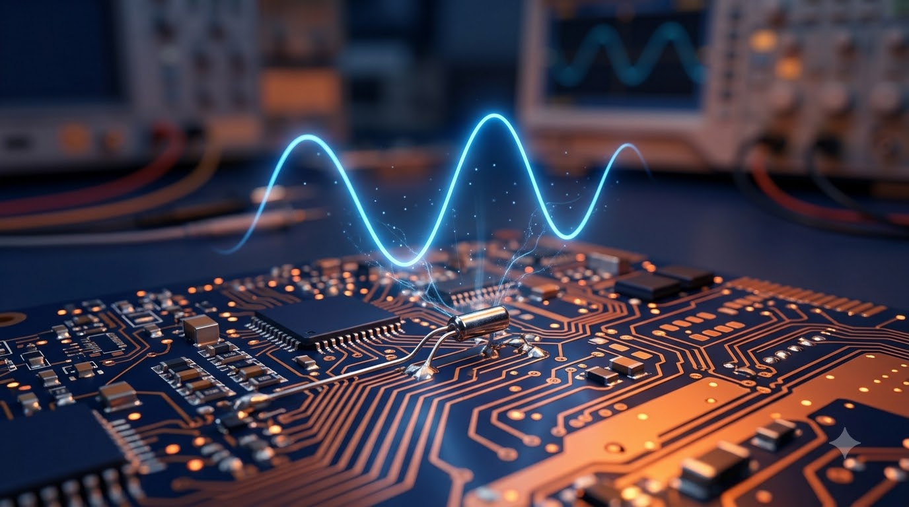

Ⅲ. 통계 · 1. 확률분포
확률변수와
확률분포
우연한 결과를 숫자로 바꾸는 방법
확률과 통계 · 공학계열 1학년 · 이미지: Google Flow(Nano Banana 2.1)로 생성
영상: Google Flow(Veo 3.1 Lite)로 생성
학습 목표
01확률변수의 뜻
시행 결과에 실수를 대응시키는 규칙의 이해
02이산확률변수
확률분포를 표와 그래프, 확률질량함수로 표현
03연속확률변수
확률밀도함수와 넓이로 구하는 확률의 의미 파악
교과서 Ⅲ-1 확률분포 · 확률변수와 확률분포
비유로 시작: 은행 번호표
사진: AKAMGO yalms, CC BY-SA 4.0, Wikimedia Commons
확률변수: 결과에 숫자를 붙이는 규칙
예: 동전 한 개를 두 번 던지는 시행 · 영상 클릭 시 일시정지/재생
이산확률변수의 확률분포
값을 셀 수 있는 확률변수
→ 이산확률변수
P(X = xᵢ) = pᵢ
확률질량함수
동전 두 번 던지기: 앞면이 나온 횟수 X의 확률분포
확률질량함수의 두 가지 성질

성질 1 · 각 확률은 0 이상 1 이하
0 ≤ pᵢ ≤ 1
성질 2 · 모든 확률의 합은 1
p₁ + p₂ + ⋯ + pₙ = 1
사진: Agoetee 123, CC BY-SA 4.0, Wikimedia Commons
비유: 계단과 경사로
이산 = 계단
정해진 높이에만 멈춤, 중간 값 없음

연속 = 경사로
어느 높이에서든 멈춤 가능
사진: Basile Morin, CC BY-SA 4.0 / PattayaPatrol, CC BY-SA 4.0, Wikimedia Commons
이산 vs 연속: 끊긴 값과 이어진 값
영상 클릭 시 일시정지/재생
연속확률변수: 확률 = 그래프 아래 넓이

예: 10분 간격 지하철
기다리는 시간 X
f(x) ≥ 0
전체 넓이 = 1
P(X = a) = 0
사진: LandAndTree, CC BY-SA 4.0, Wikimedia Commons
공학 현장의 이산과 연속

이산: 불량품 개수
0개, 1개, 2개… 셀 수 있는 값

연속: 센서 신호
온도·전압처럼 끊김 없이 변하는 값
이미지: Google Flow(Nano Banana 2.1)로 생성
이산 vs 연속: 공학 현장의 예
| 구분 | 이산확률변수 (계단) | 연속확률변수 (경사로) |
|---|
| 취하는 값 | 셀 수 있는 값 | 구간 안의 모든 실수 |
| 분포 표현 | 확률질량함수 P(X = x) | 확률밀도함수 f(x) |
| 확률 계산 | 확률의 합 | 그래프 아래 넓이 |
| 공학 예시 | 불량품 개수, 패킷 손실 수 | 센서 측정 오차, 부품 수명 |
판단 기준: “몇 개?”면 이산, “얼마나?”면 연속
요약과 확인 퀴즈
오늘의 핵심
확률변수: 결과 → 실수의 대응
이산: 확률질량함수, 합 = 1
연속: 확률밀도함수, 넓이 = 확률

퀴즈 · 웹에서 풀기 →
Q1. 주사위 한 개의 눈 X: 이산 또는 연속 판단
Q2. 동전 세 개를 던질 때 앞면의 개수 X의 확률분포표 작성
Q3. 0 ≤ X ≤ 4, f(x) = k (상수)일 때 k의 값
이미지: Google Flow(Nano Banana 2.1)로 생성